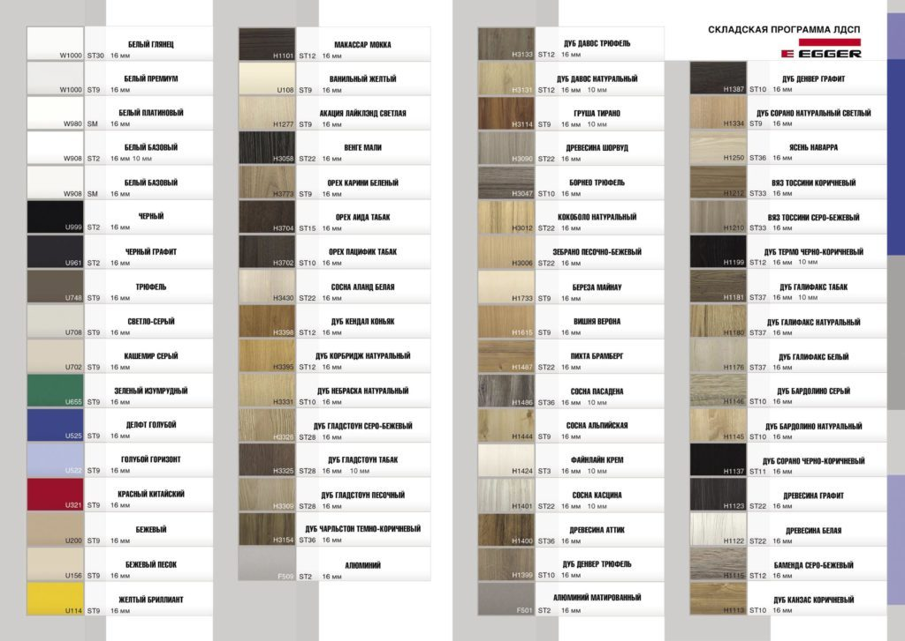
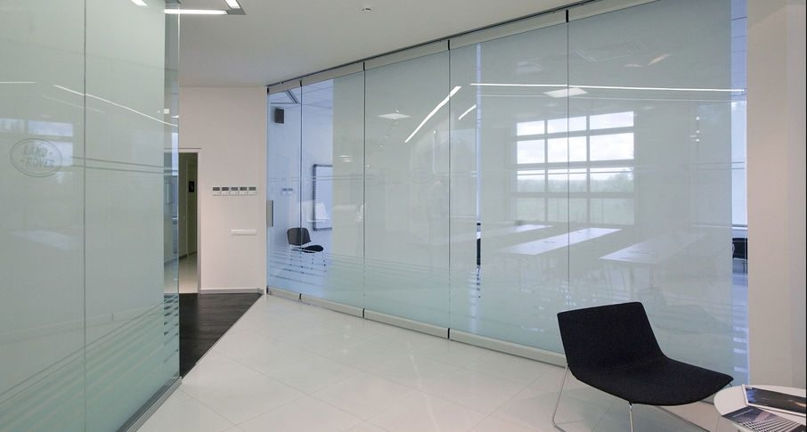
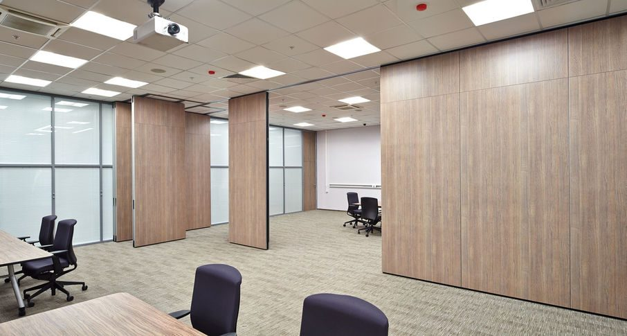
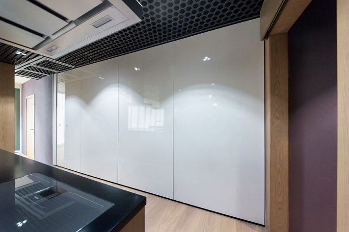
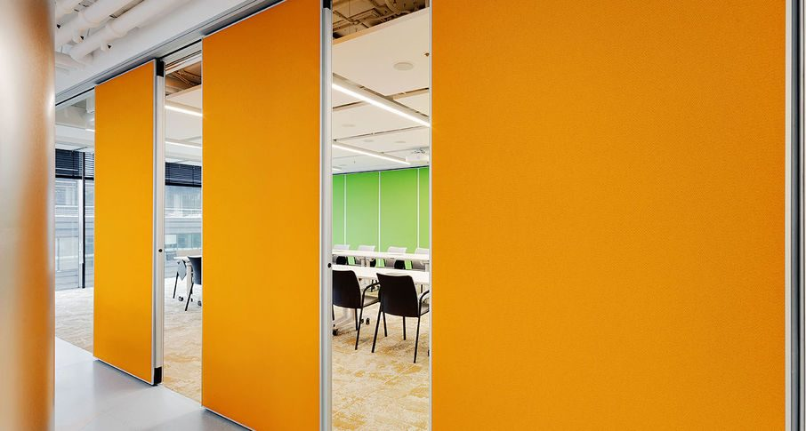

Виды отделок
Идя в ногу со временем, компания SmartWall разрабатывает и предлагает большой ассортимент всевозможных видов отделки.
Трансформируемые перегородки SmartWall служат для модернизации помещений, с их помощью можно кардинально изменить облик помещения и организовать пространство в соответствии с возникающими потребностями.
При этом различные варианты заполнения секций перегородок, которые весьма разнообразны, дают возможность вписать их в любой интерьер.
ЛДСП EGGER— В этом варианте имеется более 200 видов разнообразных декоров, среди которых встречаются однотонное, цветные, с рисунком, имитирующие фактуру древесины и других материалов, поверхности. Поверхности могут быть матовыми и глянцевыми. Подобрать желаемый вид, подходящий под интерьер, не составит труда

Закаленное стекло— характеризуется высокими ударопрочными характеристиками и высокой светопроницаемостью.

МДФ покрытый шпоном. Дизайнеры очень любят шпон за широкие возможности для реализации творческих идей, а также за натуральное происхождение .В перегородках может быть использован натуральный шпон из ценных пород дерева, таких как клен, груша,вишня, ясень, дуб, бук, сапель, олива, ольха, орех, маккоре, анигре, венге и др. А также шпон файн-лайн.

Проблема наглядного отображения информации (во время проведения презентации, например) прекрасно решается с помощью Магнитно-маркерных поверхностей. Записи и рисунки легко наносятся на специальную поверхность цветными маркерами и без труда стираются сухим очистителем или губкой
Помимо этого, на поверхность можно прикрепить дополнительные материалы при помощи магнитов, непосредственно во время докладов или презентации. Еще одной не маловажной функцией является использование белой маркерной доски в качестве интерактивного экрана проектора.

Сегодня декорирование перегородок мягкими стеновыми панелями из ТКАНИ является неотъемлемой частью замыслов дизайнеров. Тканевые панели могут быть мягкими и объемными, или же твердыми и гладкими. Заказчик может остановить свой выбор на натуральных или комбинированных тканях, в которых естественные компоненты сочетаются с синтетическими, что повышает их эксплуатационные качества. Жаккард, рогожка, велюр, бархат и другие разновидности позволят создать неповторимый интерьер.

Так же по желанию заказчика возможны варианты отделки панелей, кожей, пластиком, обоями, зеркалами. Вариаций масса-выбор за Вами!
Бесплатный замер
Оставьте заявку — замер бесплатно
Перезвоним, уточним задачу и подготовим расчёт. Можно прикрепить планировку или техническое задание.
+7 (499) 755-88-45